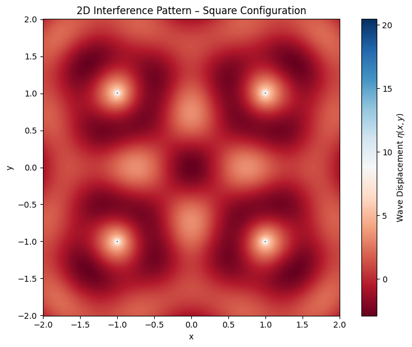
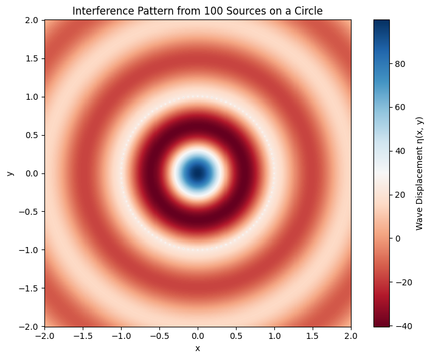

Wave Interference Simulation: Regular Polygon Configuration
Introduction
Wave interference is a fundamental concept in physics where multiple waves interact in space and time. When waves from different sources overlap, the total displacement at any point is given by the principle of superposition—they simply add together. This leads to regions of:
- Constructive interference (amplitudes reinforce)
- Destructive interference (amplitudes cancel)
Problem Setup
We choose a square configuration for simplicity and symmetry. Each corner of the square acts as a point source, all emitting coherent waves.
Assumptions:
- All sources emit waves with the same parameters: amplitude \(A\), wavelength \(\lambda\), frequency \(f\), and phase \(\phi = 0\)
- Medium is uniform and infinite in extent
- No reflection or damping
- Time is fixed to analyze a snapshot of the wave field (we can animate later)
Select a Regular Polygon
We begin by choosing a square as our polygon. This choice offers several advantages:
- It is symmetric, which makes patterns easier to interpret.
- It has enough complexity (4 sources) to produce rich interference, but is not overly complicated.
- It allows a balanced spatial distribution of wave sources.
The vertices of the square will be equally spaced around the origin for symmetry and ease of calculation.
Position the Sources
We position four wave sources at the corners of a square centered at the origin. Assuming a side length of 2 units, the coordinates of the sources are:
- \((x_1, y_1) = (-1, -1)\)
- \((x_2, y_2) = (-1, 1)\)
- \((x_3, y_3) = (1, -1)\)
- \((x_4, y_4) = (1, 1)\)
This configuration ensures all wave sources are equidistant from the center, promoting symmetric interference.
Each of these sources will emit a circular wave described by the same functional form, differing only in spatial origin.
Wave Equations
For a single source located at \((x_i, y_i)\), the wave it generates at point \((x, y)\) and time \(t\) is:
Where:
- \(r_i = \sqrt{(x - x_i)^2 + (y - y_i)^2}\)
- \(A = 1\), \(\lambda = 1 \Rightarrow k = 2\pi\)
- \(f = 1 \Rightarrow \omega = 2\pi\)
- \(\phi = 0\) (all waves are in phase)
Thus, each of the four wave sources will have a unique \(r_i\), but all other parameters are identical.
Superposition of Waves
By the principle of superposition, the total displacement \(\eta_{\text{sum}}(x, y, t)\) at each point is the sum of the displacements from all sources:
This formula accounts for both constructive and destructive interference, depending on the phases of the individual waves at any point.
In Python, this is implemented by calculating each \(\eta_i\) on a grid and summing them element-wise.
Next Step
With the wave equations and source positions defined, we're now ready to simulate and analyze the resulting interference pattern. In the next sections, we'll:
- Compute the summed wave field over a 2D grid
- Visualize the results using heatmaps
- Interpret the physics behind the observed pattern
Analyze Interference Patterns
After computing the total wave displacement \(\eta_{\text{sum}}(x, y, t)\), we analyze how the superposition of the individual waves creates regions of constructive and destructive interference.
Constructive Interference:
Occurs when wave crests (or troughs) from multiple sources meet. Mathematically, this happens when the arguments of the cosine functions are in phase:
- \(\cos(k r_1 - \omega t) \approx \cos(k r_2 - \omega t)\)
- Result: amplitudes add up, producing large values in \(\eta_{\text{sum}}\)
Destructive Interference:
Occurs when a crest from one wave meets a trough from another, causing cancellation. This corresponds to:
- Cosines being out of phase (e.g. one is positive, the other is negative)
- Result: \(\eta_{\text{sum}}\) approaches zero
Observations:
- Symmetric patterns centered around the polygon.
- Interference fringes — bands of alternating high and low displacement.
- Regions where wave energy is focused vs. cancelled.
We'll generate a 2D heatmap to visualize these features in the next step.
6. Visualization
To visualize the interference, we create a 2D plot of the water surface at a fixed time \(t = 0\).


Interference Pattern Analysis
After simulating wave superposition from different source configurations, we can now interpret the results for both:
- A square configuration (4 sources)
- A circular configuration (100 sources forming a regular 100-gon)
Case 1: Square Configuration (4 Sources)
Description:
- Four coherent point sources are placed at the corners of a square.
- Each emits a circular wave of the same amplitude, frequency, and phase.
- The interference pattern is generated by summing their contributions at each point on the grid.
Pattern Characteristics:
- Symmetric Interference: Due to the square's rotational and reflectional symmetry, the resulting pattern is also symmetric about both axes and diagonals.
- Grid-like Fringes: Constructive and destructive interference form a grid or checkerboard-like pattern, particularly near the center.
- Bright Nodes (Maxima): Where wavefronts meet in phase, the amplitudes reinforce.
- Dark Nodes (Minima): Where crest and trough cancel out, destructive interference occurs.
Physical Insight:
- The square geometry causes wavefronts to overlap in consistent, repeatable ways.
- These overlaps create a stationary interference pattern, highlighting wave superposition principles clearly.
- This is similar to multi-slit interference, but in 2D space with radial waves.
Case 2: Circular Configuration (100 Sources)
Description:
- 100 wave sources are placed evenly around a circle, forming a regular 100-gon.
- As the number of vertices increases, the shape approximates a continuous ring.
Pattern Characteristics:
- Radial Symmetry: The circular arrangement produces a pattern that is symmetric about the origin in all directions.
- Concentric Rings: Bright and dark circular fringes appear, similar to ripples or Airy disks in optics.
- High Density of Interference Nodes: Due to the large number of overlapping wavefronts, there are many fine structures—regions of intense constructive and destructive interference.
Physical Insight:
-
This setup mimics a circular wavefront array, similar to what you’d see in:
- Holography
- Optical diffraction through a circular aperture
- Ripple tank experiments with ring-shaped disturbances
-
The pattern complexity increases with the number of sources: more sources = more intricate interference zones.
- At the center, the constructive interference is often dominant, forming a bright central spot or focus point.
Comparing the Two:
| Feature | Square (4 sources) | Circle (100 sources) |
|---|---|---|
| Geometry | Discrete square vertices | Near-continuous circular ring |
| Symmetry | 4-fold (rotational + mirror) | Full radial symmetry |
| Pattern Shape | Grid-like | Concentric ripples / rings |
| Interference Complexity | Moderate (easily traceable) | High (dense structure) |
| Visual Analogy | 2D double-slit | Circular aperture diffraction |
| Educational Use | Great for basic understanding | Shows advanced interference behavior |
Conclusion:
- The square configuration is ideal for understanding basic principles of wave superposition and symmetry.
- The 100-source circular configuration demonstrates how rich and detailed interference patterns can become as the number of sources increases.
- Both cases visually reveal how geometry affects the way waves overlap and interact — a core idea in both classical and modern physics (e.g., optics, acoustics, quantum mechanics).